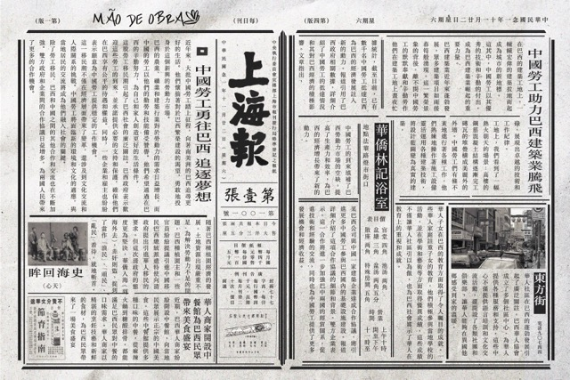
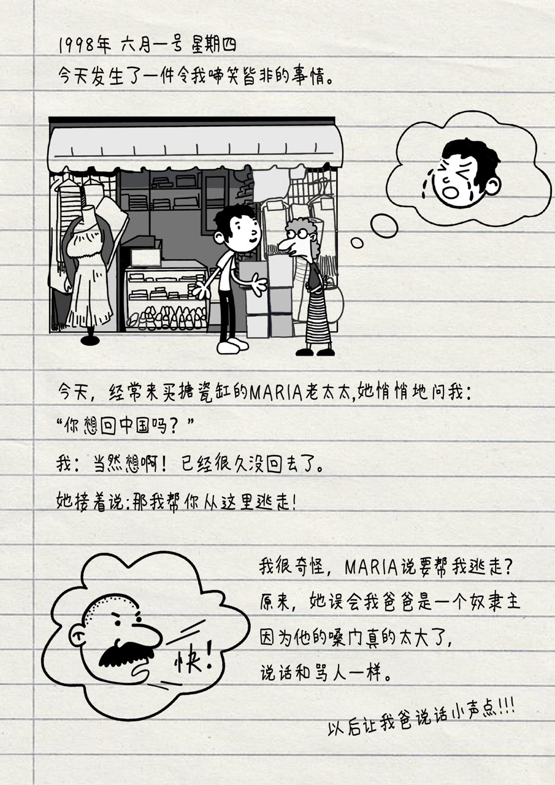
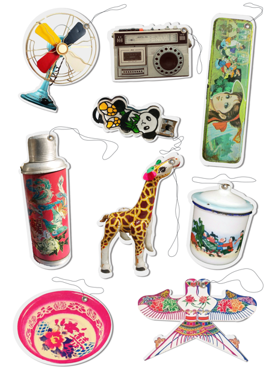
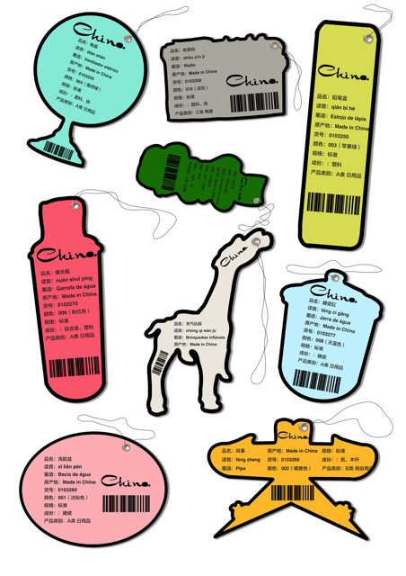
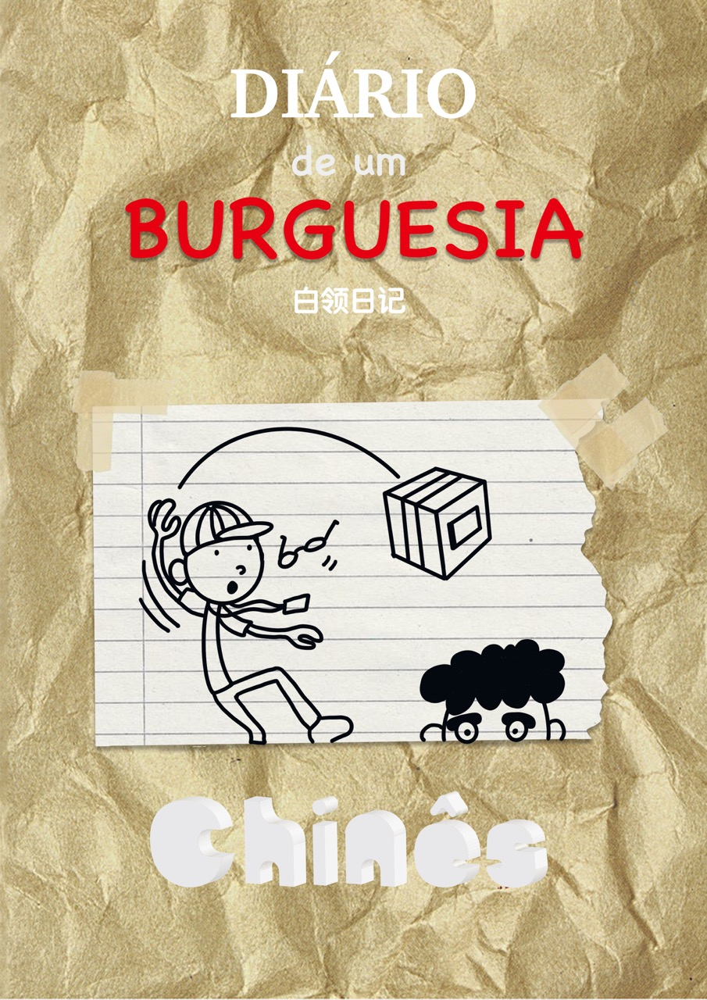
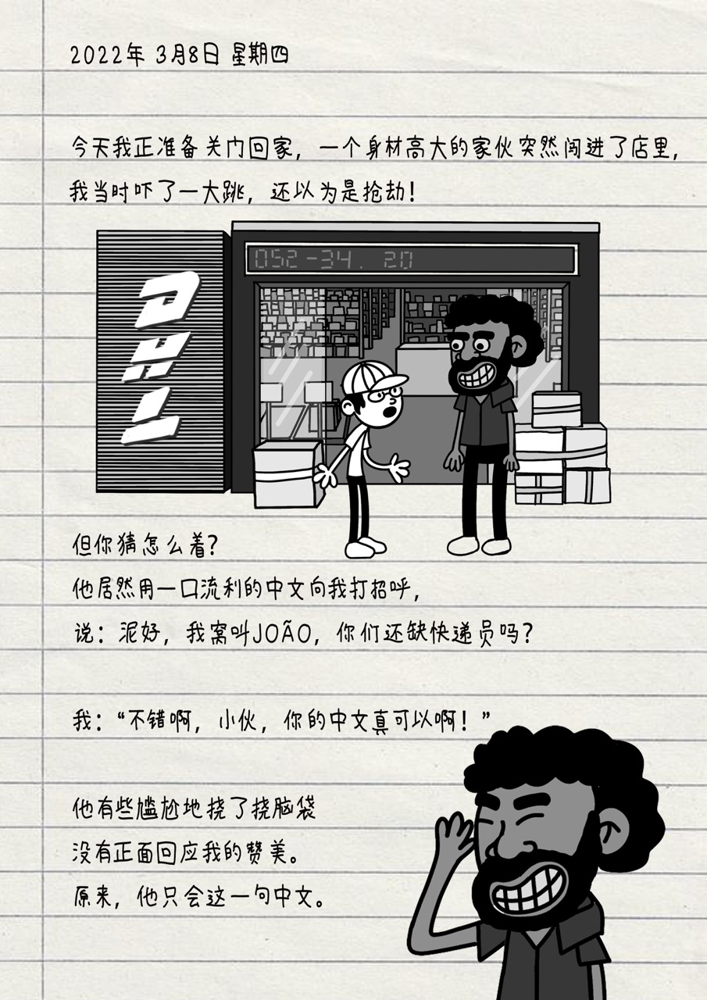

报纸
中国报纸报道华人到巴西当劳工的新闻报纸是重要的传播媒介，具有反映和引导社会舆论的功能，是大众传播的重要载体，同时也是19世纪末中国人向外看世界的一双眼睛。我们虚构了一张报道华人到巴西做工的新闻报。 通过这个媒介，恰恰证明了第一代移民的开始打开了巴西和中国之间沟通与合作的大门，为中国劳工提供了更多发展机会和经济收益。




标签
20世纪70年代的华人在巴西安顿下来，经营着小商品企业，把中国时兴的商品带到巴西，在售卖过程中，他们往往需要对一些固定词组重新进行葡语的翻译和具体的解释。而“标签”具有介绍商品信息的属性，标志产品分类或内容，确定关键字词，便于查找和定位的工具，标签的再设计重新解释了上世纪7、80年代的商品， 商品背后的文化同时也通过“标签”这一媒介表现出来。



快递单
电商行业在巴西的兴起，让更多的华侨华裔从事外贸相关的工作，货运单是寄送货物的说明，同时也建立起了中国与巴西之间的商业合作关系，华侨成为了联系国家与国家之间的桥梁。